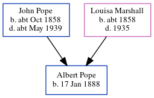

Albert Edward Pope 1888 -
[ Home ] | [ Calendar ] | [ Surnames Index ] | [ Census Index ] | [ Family History ]A porter and the child of John Pope (a bricklayer) and Louisa Marshall, Albert Pope, the third cousin twice-removed on the father's side of Nigel Horne, was born in Chiswick, London, England on Jan 17, 18881,2,3,4 and baptized there on Mar 25, 1888.
During his life, he was living at Binns Road in Chiswick on Apr 5, 18911; and at Eastbury Grove in Chiswick on Mar 31, 19012 and on Apr 2, 19115.
Parents
- John Isaac was born c. Oct 1858
- Louisa was born c. 1858
Citations
- 1891 England, Wales & Scotland Census - Findmypast (was age 3 and the son of the head of the household)
- 1901 England, Wales & Scotland Census - Findmypast (was age 13 and the son of the head of the household)
- England & Wales births 1837-2006 - Findmypast
- England Births & Baptisms 1538-1975 - Findmypast
- 1911 Census for England & Wales - Findmypast (was age 23 and the son of the head of the household)
Media
Middlesex Baptisms - GBPRS-B-962016118-1
England & Wales births 1837-2006 - BMD/B/1888/1/AZ/000453/353
Family Tree
Generated by ged2site. Last updated on Jun 11, 2024